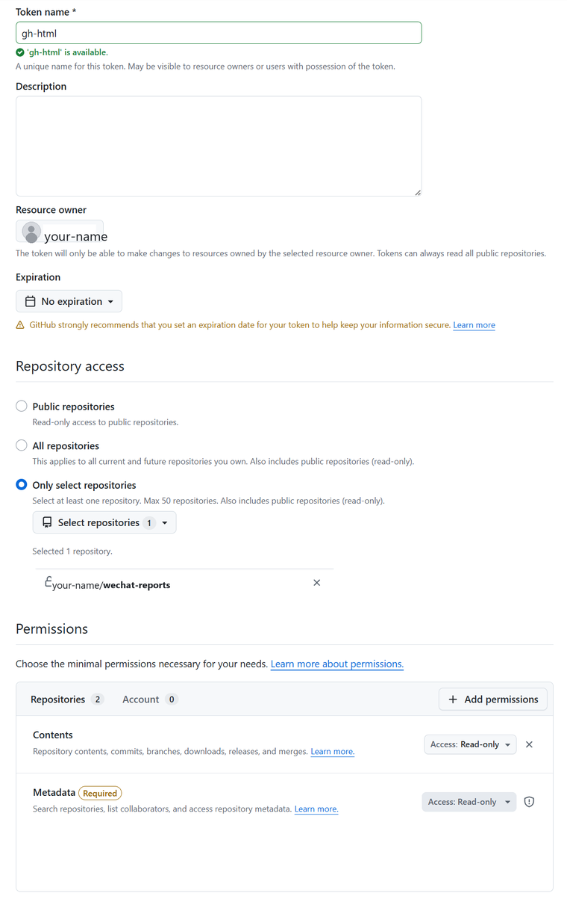

上手指南
跟 AI 说一句，报告就出现在你微信里
① 第一次准备只做一次 · 可直接发给 AI 帮你做
1把仓库变成你自己的
Clone
duzitong/wechat-reports，push 到自己账号下。自己或家人看，用
private 就行（家人共享见第 ③ 步）；想转发给任何人（群里、朋友圈），设为
public（私有库的报告，没 token 的人打不开）。
2把微信连到本机 agent
用
wechat-acp 起一个桥，把微信消息接到你电脑上的 AI（
--agent 换成你喜欢的）：
npx -y wechat-acp@latest --agent copilot --cwd <仓库路径>
3给小程序一个只读 token
在「GH HTML 查看器」小程序里填一个 GitHub Fine-grained PAT（Contents 只读），token 只存在填入它的设备上。家人一起看：把这个只读 token 也发给家人，各自填进小程序，就能看你的私有库 —— 不必公开。

按图设置：Resource owner 选你自己，Repository access 选「Only select repositories」，添加所有想要访问的仓库；Permissions 里把 Contents 设为 Read-only（Metadata 会自动带上）。
② 之后怎么用每次就这两步
💬
说：跟 AI 说话
在微信里发一句「帮我规划 3 天东京行程」就行。AI 会写成一篇 HTML 报告，自动 push 到你的 repo。
⬇ AI 写好 HTML 自动推送 ⬇
📱
看：打开你的报告
打开「GH HTML 查看器」指向你的 repo，点开 AI 刚写的那篇报告，就能在微信里读了。
③ 能让它写点啥
规划旅游
记录游记
学习笔记
市场分析
翻译文章
赛事预测
选购对比
健身计划
其实不限这些 —— 想要什么报告，直接开口就好。